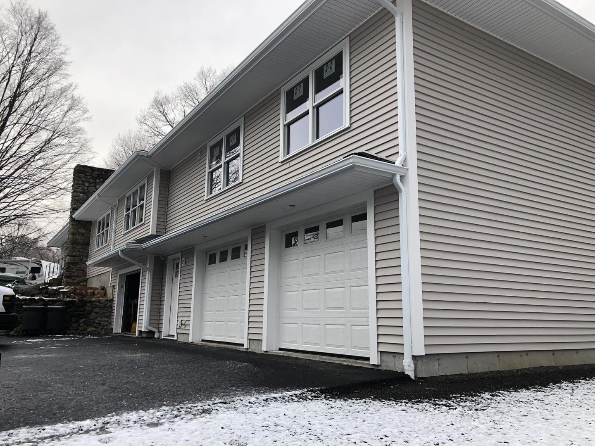

What a home
addition costs
Home addition and second-story pricing in Massachusetts — planning ranges, cost drivers, and build-up vs. build-out.
What a home addition costs
Additions are the biggest remodeling investment most homeowners make — and the most site-specific. Foundation, structure, roofline, and mechanicals all factor in. Here’s how to think about the numbers before your free estimate.
Planning ranges
Per-square-foot figures are illustrative for planning only. Every addition is bid on its own scope and site.
What moves the price
Foundation & structure. New footings, beams, and reinforcing for a second level are major drivers. Matching the home. Blending rooflines, siding, and trim so the addition looks original takes craftsmanship. Mechanicals. Extending heat, electrical, and plumbing to new space. Finishes. The same room can be modest or high-end depending on choices.
Build up or out?
If your lot is tight or you want to keep the yard, going up may be best. If your foundation and layout favor it, going out can be simpler. We evaluate both and engineer the right approach.
Frequently asked
How much does a home addition cost?+
Additions are typically priced per square foot of finished space. In our area, a general planning range is roughly $250–$500+ per square foot depending on complexity, with full second stories and complex sites at the higher end.
Is it cheaper to build up or out?+
It depends on your lot and foundation. Building out adds foundation and roof; building up adds structural work but preserves yard. We assess both and recommend what fits your home and budget.
Does an addition need permits?+
Yes. Additions require permits and inspections in Massachusetts. As a licensed GC we handle the permitting and coordinate inspections.
Related guides
Get a real addition number
Every addition is unique. Get a free, itemized estimate for yours.